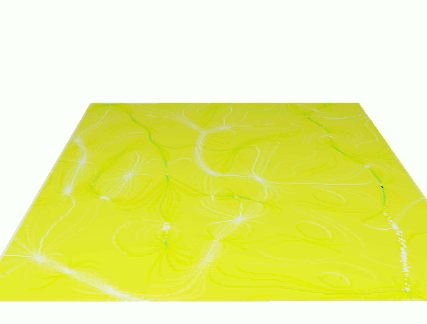
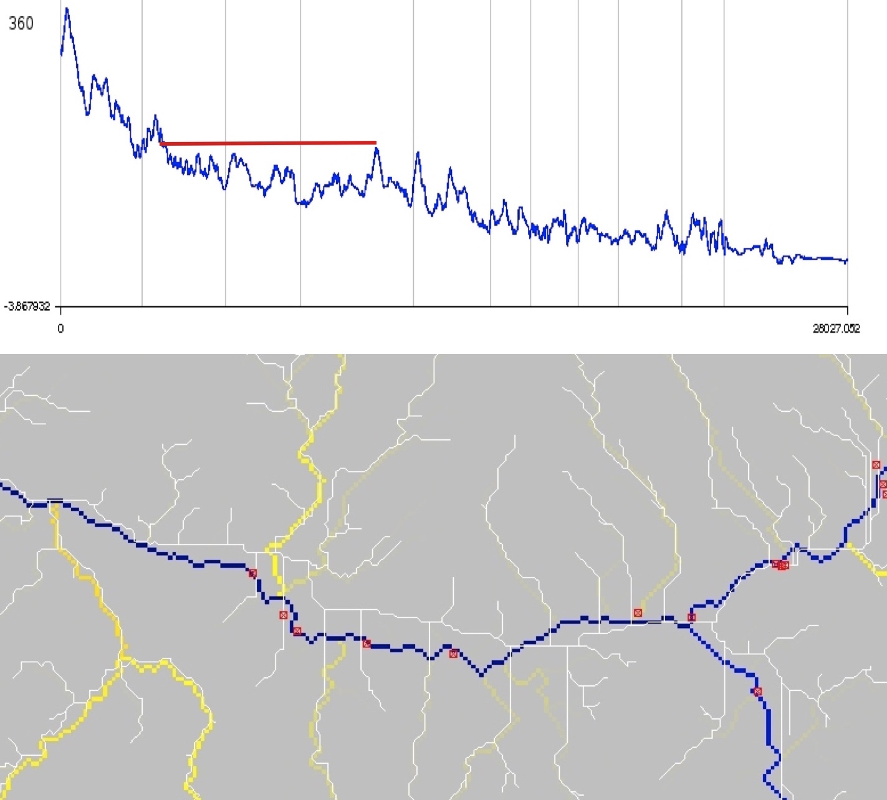
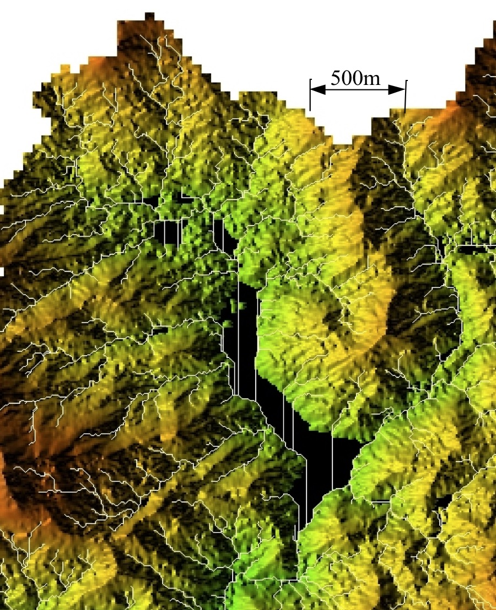
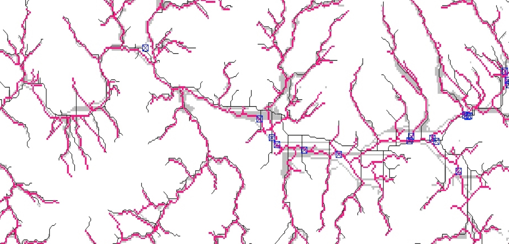
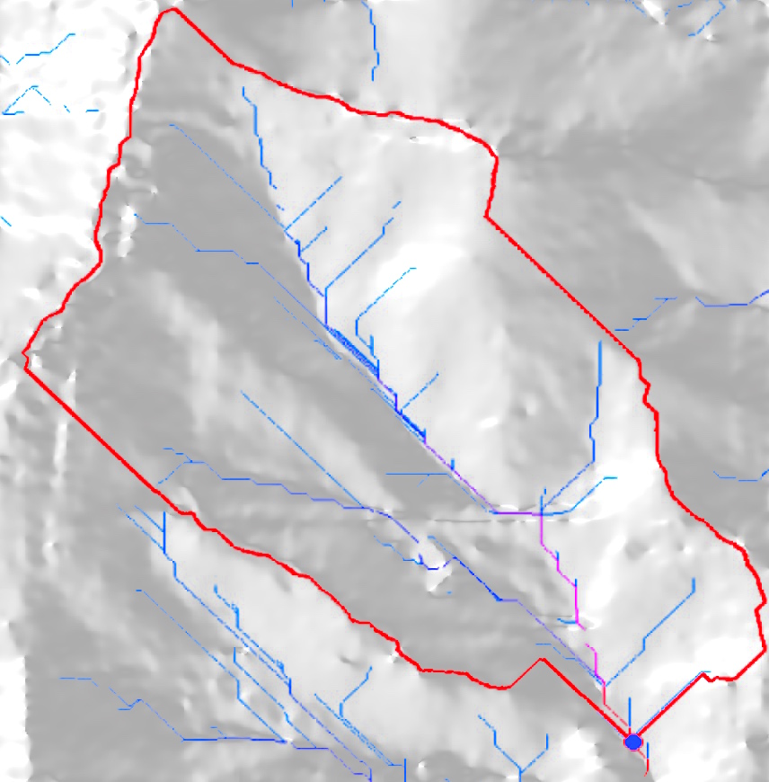

Hydrologic and Erosion Modeling
Helena Mitasova
Learning objectives
- empirical and physics based components of models
- spatially averaged and distributed models
- steady state, continuous time and dynamic models
- spatial hydrologic modeling: processes and methods
- modeling of erosion, sediment transport and deposition
Geospatial modeling of processes
- Numerical simulations: tools for gaining new knowledge - virtual experiments
- Geospatial simulations: the modeled quantities are function of a location on Earth
- Geospatial models have evolved:
- from: empirical, spatially averaged, static
- to: process-based, distributed, dynamic with
the aim to predict modeled quantity at any point in space and time
Most models combine several approaches
Empirical and process-based models
Empirical:
- statistical models derived from experimental data
- applicable only to landscapes under same conditions
Process-based
- based on physical laws, such as continuity and mass conservation equations
Empirical / statistical methods often have physics based interpretations,
physics based equations often have empirical parameters
ML, AI - empirical approach
Geospatial representation
Modeled quantities are usually represented by continuous georeferenced fields
To support numerical modeling the fields are discretized:
- spatially averaged units: polygons (hydrologic units, subwatersheds, hillslope elements) - complex geometrical shape is replaced by tilted plane
- spatially distributed representation: structured and unstructured meshes, or random particles
Spatially averaged models
Spatially averaged models predict the variable for each averaged unit, such as watershed,
the result is discrete polygons or a number

Spatially distributed models
Spatially distributed or spatially explicit models predict
the variable at any point in space, the result is continuous field
Static and dynamic models
Empirical, statistical models - usually steady state
Process-based or hybrid models - capture dynamic processes
Geospatial modeling challenges
- data intensive - large heterogeneous data sets
- complex, multiscale spatial interactions
- high level of uncertainty and difficult validation
Physics : predictions at the electronic level are with 6-12 digits accuracy
Geosciences: 50% differences between measurements and model could be satisfactory
Modeling of processes in GIS
- workflow using GIS tools: simple empirical models with physics based components
- models fully integrated as modules: complex physics-based or empirical models
- models linked to GIS as extensions or add-ons: common structure and interface
- complex modeling systems linked through data: GIS is used for input data processing,
results analysis and visualization, but the model is independent from GIS.
- complex modeling systems can incorporate selected GIS capabilities
Hydrologic modeling
surface water flow (overland flow, channels), subsurface flow, groundwater
Spatially Distributed Hydrologic Models
Geometry driven and process-based continuity equation:
- flow accumulation by D8, passes through depression as least cost path, no ponding

- flow acumulation by D-inf, depression is a sink

- kinematic wave - water accumulates in the sink to infinity

The last 2 options require hydrologically conditioned DEM
Spatially Distributed Hydrologic Models
Bivariate continuity equation with diffusion term
- diffusion term allows water to pass through depression

- channel defined through depression as preferential flow

The last 2 options require hydrologically conditioned DEM
Dynamic Hydrologic Models
Flow routing across landscape: geometry-based,
evolution of steady state flow as water moves through the landscape
with steady rainfall and uniform flow velocity

Dynamic Hydrologic Models
Flow routing across landscape: process-based

Path sampling method
- based on duality between particle and field representation
- path samples represent water evolving according to the shallow
water bivariate continuity equation - drift and diffusion
- Green's function

Variable rainfall excess and flow velocity
Multiscale modeling: nested grids
10m resolution combined with 2m resolution: particles are split when they enter high resolution area
Other approaches: unstructured meshes, nested meshes
Flow routing methods
Flow accumulation as a result of SFD and MFD routing with D8 flow direction


Weighted flow routing
Each cell is assigned weight proportional to the amount of runoff it produces
(rainfall excess available for runoff after infiltration and vegetation intercept)


Land use map with developed areas (orange) and associated runoff weights - in blue areas
all water gets routed, in grey areas only a fraction
Weighted flow routing
Spatially variable runoff reflects the impact of developed areas on flow accumulation


Stream extraction
- Automated stream mapping: extracting connected stream network from flow accumulation map
- Stream raster map is derived using map algebra based on flow accumulation threshold
- Result is converted to vector representation of a connected stream network
- Stream origin is dynamic, often driven by groundwater:
additional information is needed for accurate identification
Stream extraction
Flow accumulation from 30m NED using SFD D8 method, threshold accumulation: 100 cells,
and a vectorized extracted stream network

Flow routing in flat areas
- to create connected stream network flow needs to be routed through flats and depressions
- integer DEMs, lakes or filled depressions create flat areas
- flat areas: zero slope and undefined aspect
- solutions:
- iterative assignment of direction from the first draining cell
- imposed gradient (small change in elevation)
Flow routing through depressions
Depressions "trap" flow
Sources of depressions in DEMs:
- real topographic features
- noise, measurements errors
- processing artifacts
Handling depressions
Filling, carving, hybrid, least cost path
Depressions filling: lidar DEM
Depressions in lidar-based DEM and flow accumulation using DEM filling

Many depressions are artificial lakes where bridges or roads create dams
Depressions filling: radar DSM
Radar (SRTM, IFSARE) DSM include vegetation surface leading to complex, nested depressions


Filling alters elevation in large areas
Depressions: algorithm comparison
- Filling with single stream (black) and multiple parallel streams (grey) across filled depression
- Least cost path stream (red) and on-ground stream location from GPS (blue points)

Depressions: carving
Carving streams from digitized stream data may introduce artifacts, if the digitized streams
do not match the DEM

Hydrologically conditioned DEM
Modified DEM with connected stream network where each grid cell drains into the outlet
- hydrologically conditioned DEM does not have depressions or flat areas
- it should not be referred to as hydrologically correct, because all wetlands are removed
Stream extraction accuracy
Measured as horizontal accuracy of stream centerline
- topographic maps (blue lines) - have often the lowest accuracy, and the data are old
- National Hydrographic Data - updated, structured representation of stream and river networks
- extracted from lidar-based DEMs - better, but accuracy low in coastal plane, improved new lidar mapping
- digitized from high resolution orthophotos and on ground surveys - most accurate except forested areas
- structures require additional information (bridges are represented as dams in DEMs)
Watersheds
- watershed - important land management unit
- water and mass from a watershed drains to a single point: outlet
- other terms for watershed: (drainage) basin, catchment, contributing area
- watersheds can be organized into hierarchies based on the size of contributing area
USGS Hydrologic units: hierarchy of drainage areas for national river network
see more at http://water.usgs.gov/GIS/huc.html
Watersheds
Watershed and its subwatershes

Watershed analysis
Most common types of watershed analysis:
- find watershed boundaries for a given outlet, for example, stream gauge
- find contributing area for a given stream segment
- partition a region into watersheds with the given approximate size
Watershed analysis
Watershed boundaries for a given outlet

Watershed analysis
Partition of a region into watersheds

Summary
- we have defined cumulative terrain parameters based on flow routing: flow length, flow accumulation
- we have learned about methods for computing flow direction (D8, Dinf) and flow routing SFD, MFD
- we discussed flow through flat areas and depressions
- we have applied flow routing to extract streams and watersheds